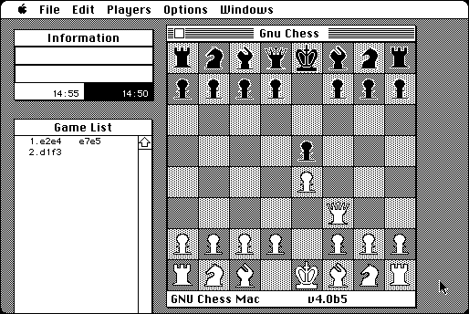

Download
gnuchessMAC40b5.zip (176K) GNU Chess Mac 4.0b5 repackaged into a zipped hfs disk image and checksum file. The disk image can be mounted with Mini vMac.
gnuchessMAC40b5.hqx (233K) GNU Chess Mac 4.0b5 in the original format.
copyright: the work of many
mod date: Feb 26, 1995
license: GPL
from url :
Tim Mann's Chess Pages
Chess for Macintosh. Originally by John Stanback, ported by Dan Oetting, Tom Gerardy and Airy Andre. Requires “System 6.0.7 or better”. Source code is available.

Download source code
gnuchessMAC-src-v40b5.zip (143K) GNU Chess Mac 4.0b5 Source repackaged into a zipped hfs disk image and checksum file. The disk image can be mounted with Mini vMac.
gnuchessMAC-src-v40b5.hqx (213K) GNU Chess Mac 4.0b5 Source in the original format.
If you find these downloads useful, please consider helping the Gryphel Project, which hosts them.
Here are the md5 checksums for the downloads, signed with Gryphel Key 5:
--------- GRY SIGNED TEXT --------- 3fa435f0a66c8cf982f1209a483800b7 gnuchessMAC40b5.zip 2a5accfbf4598956b4e07c173abac4b9 gnuchessMAC40b5.hqx 0d84a7fdf1fc033d82740df4bce50399 gnuchessMAC-src-v40b5.zip 0fd91dbf63f9ea8a286a4fab3a1cb43a gnuchessMAC-src-v40b5.hqx ------- BEGIN GRY SIGNATURE ------- Gry/4Xa8CFcUzxdN/JClulpqYwwYjsciXxnIymBIGL5nAPW+nTGyf9ye5uSX8Bk9 zgu51TkFa0E8dtyNo411yaGy1mhrZ9PIJW8GJ3VdjDX6kVBpn/Fa/L0S3a5eeg1Z McGZ50NPHhr25uu2mC7iqkt0b7hoZ1jYyHOzB67a+X55z4MYHm/UymXS4JqHkZxX -------- END GRY SIGNATURE --------